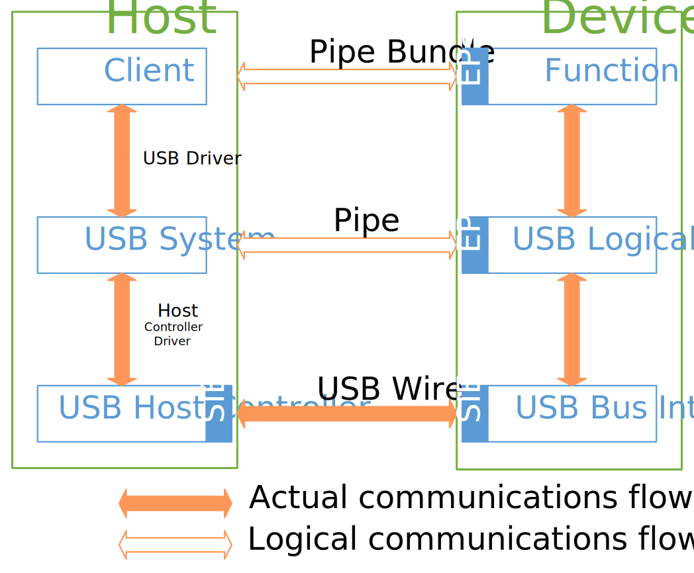
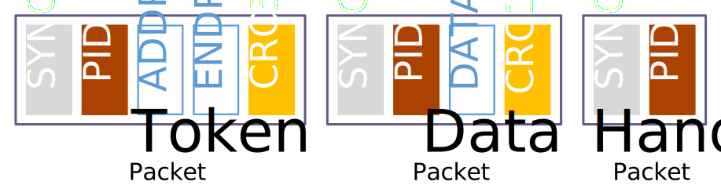

本文为USB 2.0标准手册，同时简单介绍了USB 2.0中的基本概念，力求使读者对USB 2.0有一定的了解，并且明确下一步的研究方向。
原创文章，转载请注明出处：MetroCores, www.metrocores.com.
USB 2.0标准
在USB 3.1尚未大规模普及的今天，USB 2.0仍是最常用的标准。有意思的是，USB 2.0标准同时将低速(Low Speed, 1.5 Mbps)、全速(Full Speed, 12 Mbps)和高速(High Speed, 480 Mbps)三种不同速度整合在一起，构成了一套较为完整的解决方案。（而USB 3.1更像是USB 2.0的扩展，当然相互之间还是兼容的。）
值得一提的是，USB 2.0标准的眼光比I2C之类的协议要深远得多。USB 2.0标准包括但不限于以下这些内容：
- 机械和电气特性：很多协议都只定义了电气特性（即传输电平、速度等等），而USB 2.0由于速度快、物理接口（也就是USB Type-C这种接口）统一，因此对于机械特性也有详细的定义。
- 数据流模型：像SPI这样的协议只提供了传输的框架，至于传输的内容完全由用户定义；而USB 2.0提供了从主机(Host)到设备(Device)之间的完整的数据流模型，包括软硬件和扩展接口(Hub)等内容。值得一提的是，USB 2.0中的端点(Endpoint)和管道(Pipe)是基础中的基础，是制定以下内容的根据。
- 协议层：这个就不多说了，大家有的它都有，而且还有同步(SYNC Field)、错误检查和重传(Error Detection and Recovery, using CRC)机制，基本把传输可能遇到的意外情况都考虑到了。
- 设备和描述符：通过描述符(Descriptor)的方式，使得主机能够识别不同厂商、不同功能的设备，这也是USB 2.0实现即插即用(Plug & Play)的重要条件。
- USB设备类：这个部分之所以单独提出来，就是因为USB官方定义了一系列被称之为“设备类”的概念，允许不同厂商生产的功能相似的产品以相同的接口工作，从而大大简化驱动和应用的开发流程。如果没有设备类的概念，我们现在可能装个键盘和U盘都需要安装特定的驱动，可见其重要性。
当然，前面我们提到过，我们只关注USB标准中的数据传输部分（虽然QC什么的好像也很好玩），这样就可以花更少的篇幅把核心概念解释清楚。
USB 2.0标准的结构
在开始USB 2.0标准的概念介绍之前，我们现在看看USB 2.0标准的结构以及标准中的对应章节。
|
|
对于一般的USB应用开发，我们需要关注以下部分：
- 数据流模型 (Data Flow Model)。基础。
- 协议层 (Protocol Layer)。也是基础。
- 设备模型 (Device)和描述符*(Descriptor)。其中官方定义的描述符包括设备标准描述符 (Device Standard Descriptor)和设备类描述符 (Device Class Descriptor)*，前者必须实现，而后者则根据使用的设备类有不同的文档，请根据需要阅读相应文档。
- 客户端 (Client)。国内习惯称之为“上位机”，指USB设备的驱动（注意，和USB Driver的概念不同）和相关的应用程序。如果使用某些通用的USB驱动库（如libusb、WinUSB），可以减少客户端的编程复杂度。当然，如果使用了设备类的话，可以忽视这部分内容。
看起来似乎不算多？总之先把概念的东西搞清楚才是当务之急。
USB 2.0的基本概念
拓扑结构
没啥好说的，简单概括一下：
- USB 2.0的拓扑结构是由Host、Device和Hub组成的树状结构。
- Host即为Host Controller，在拓扑结构中有且仅有一个并在树的根部，直接与名为Root Hub的特殊Hub相联。
- Hub（包括Root Hub）是特殊的Device，并且Hub可以向下接Hub或者Device，但非Hub的Device不能继续往下延伸。
- 拓扑结果最多为7层，最多可接127个设备（包括Hub）。
- Hub自动完成数据的分发，Device不需关心Hub的存在。
还有一点需要另外注意，就是在拓扑结构中提出了Compound Device的概念，目前通用的中文翻译为复合设备，指的是带Hub和Device的树状结构，是广义上的Device。讲真感觉没啥卵用，还不如Hub和Device分离的结构来得好用。
USB 2.0的标准中有拓扑结构的原理图，不过貌似有版权所以就不放了，见标准文档注1中的Figure 4-1。
通信流
以下这张图是我自己画的，应该能比较好地体现USB的通信流模型。本图参考了标准文档注1中的Figure 5-2和5-9，并作了适当修改。

我们先来纵向地看这个图。USB 2.0标准对通信流进行了详细的定义。首先，通信流模型被分为三个部分，分别是Interconnect、Host和Device。
Interconnect
Interconnect部分定义了Host和Device之间的连接。Interconnect是应该被首先考虑的部分，因为它定义了数据的交互和各个组件的事务处理范围。
- 最底层的部分是物理连接线。我们都知道，这代表了实际上的USB连接线。
- 中间的一层是Pipe，即管道。顾名思义，Pipe代表了一条数据的传输通道。USB中的所有数据都是在Pipe上传播的，Pipe上发送的一组数据包组合成了一次有意义的传输。在USB 2.0标准中，Pipe最多有16个，其中有且仅有一个Pipe是特殊的，被称之为Default Pipe，可以用来配置其他的Pipe。除了Default Pipe之外，其他Pipe都可以根据Device的要求进行配置。
- 最上面的一层是Pipe Bundle，字面上的意思就是管道集注2。Pipe Bundle是一组Pipe的集合，如果说一个Pipe定义了一项具体的操作，那么一个Pipe Bundle通常代表了一系列操作组合成的一个完整的功能，例如对U盘操作就需要同时定义读写两条管道。
Host
Host部分代表了USB中主动控制的一方。在USB结构中，Host一定是Master：这意味着几乎所有的操作注3都是由Host发起的，不管是读写还是配置。对应Interconnect，Host也有三个层次。
- 最底层的部分是Host Controller，也就是主机控制器，是Host直接与Device交换数据的部分。Host Controller定义了USB Host的状态机，实现了状态之间的转换。Host Controller中的SIE(Serial Interface Engine)实现Framed Data和差分信号的相互转换，其功能类似于我们常说的PHY。
- 位于中间是USB System，即USB总线的相关驱动。USB System用来管理设备，并且动态地维护Pipe的定义和数据。这一部分功能通常由操作系统来实现。
- 最顶层是Client，包括了USB设备的驱动和使用USB设备的应用程序。驱动和应用程序通常使用一个或多个Pipe Bundle。
Device
有主动就有被动，Device就是数据交互中的Slave一方。对应Interconnect，Device也有三个层次。
- 最底层的部分是USB Bus Interface，其实就相当于Host Controller去掉了状态控制的部分，没啥好说的。
- 中间是USB Logical Device，针对每个Pipe定义了一个接口，称之为Endpoint，即端点。Endpoint和Pipe一一对应，因此一共有16个Endpoint，其中对应于Default Pipe的是Endpoint 0。Endpoint是我们在USB Device开发中经常接触的一个概念，因此需要好好理解。
- 那么剩下的就是Function了。Function是一个设备的所有功能的集合，Function可以被划分成多个Interface，每个Interface连接一系列Pipe Bundle，代表了每个不同的功能。
在有了通信流的概念之后，就可以完整地定义USB的数据流模型了。
传输和传输类型
在USB中，数据交互的最基本单位是Transaction。一次Transaction包括了Token、（可选的） Data和Handshake这几种Packet注4，而（在一个Frame内的）多个相关的Transaction则构成了一次Transfer。（感觉像在说绕口令一样）

上图可以发现一些有意思的地方：
- 每个Packet都有一个SYNC Field。这是用来同步数据之间的传输的一段序列。在High Speed中，SYNC Field的长度为32 bit，而其他速度则为8 bit。
- PID是Packet Identifier Field的简称，表示一种特殊的结构（4位源码+4位反码）。需要注意的是，PID在不同Packet下的定义是不同的，具体请参照USB标准注1中的Section 8.3。
- Handshake Packet并没有CRC校验域，那么是如何确保Handshake包正确传输的呢？这就要涉及到Data Tongle Synchronization了，我们暂且不表。
USB标准将Transfer划分为4种，分别是：
- Control Transfer，即控制传输
- Isochronous Transfer，即同步传输
- Interrupt Transfer，即中断传输
- Bulk Transfer，即批量传输
Transfer的相关概念十分重要，我打算另开一篇文章来讲，未尽事宜可以参考USB标准注1中的Chapter 8。
总线协议
完整的USB总线协议从低到高包括以下4个层次：
- Packet
- Frame & Microframe
- Device Endpoints & Pipes
- Interfaces & Pipe Bundles注5
其他层次我们都介绍过了，接下来说说Frame和Microframe。
Frame和Microframe分别对应于LS/FS和HS设备，是一次Transfer的最大有效范围。Frame的长度为1 ms，而Microframe则为125 us，即把一个Frame等分为8个Microframe。在一个Frame或Microframe开始时，将会发送Start-of-Frame Packets，以进行FrameNumber域的同步。其他操作都会在SOF Packets后执行。
设备状态
USB的设备状态指代设备从接入到配置之间以及暂停等所有可能状态。USB标准注1定义了所有可能的设备状态以及状态转换的条件，具体请参考Section 9.1部分。
设备请求
在某些情况下，主机需要像设备请求信息，或者对Device进行配置，这其中用到的就是设备请求(Device Requests)。其中，USB标准定义了标准设备请求(Standard Device Requests)，以获得设备的基本信息并进行必要配置，设备需要实现这些请求。除此之外，还有Class Device Requests和Vendor Device Requests，我们遇到再提。
设备描述符
对应与设备请求，设备对于请求的回应被称为设备描述符(Device Descriptor)，用来描述设备的一系列行为。设备描述符提供了对设备功能的描述，这些信息足够主机能够识别并且正确配置设备。
设备请求和设备描述符也是比较重要的内容，请参考后续的文章。
总结
USB的概念还是很多的，一篇文章讲完可能不大合适，因此我将一些重要的概念单独提出来进行分析，希望大家可以更好地理解。
注释
- USB Specification Revision 2.0
- 管道集是我自己的翻译，貌似没有统一的翻译，大家开心就好。
- 除了Remote Wakeup，这（似乎）是USB设备唯一一个可以主动发起的操作。
- 还有SOF Packets，不过开发人员并不需要关心SOF Packets，Host Controller会自动进行同步控制。
- 这个也是我擅自加进来的定义，感觉更符合实际情况。